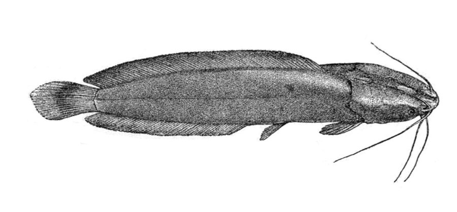

इंडियन मागुर मछलीIndian Magur
Clarias magur · Clariidae · FSH-0064

- Scientific name वैज्ञानिक नाम
- Clarias magur (Hamilton, 1822)
- Family कुल
- Clariidae
- Hindi हिंदी
- इंडियन मागुर मछली
- Local names स्थानीय नाम
- indian magur, magur machhli, wagur, desi magur, magur
- Status here यहाँ की स्थिति
- native
- Movement आवागमन
- Resident, here all year
- Known from कहाँ दर्ज
- Others have published records from the wider Awadh–Purvanchal plain, none yet from Basti–Ayodhya अवध–पूर्वांचल से दूसरों के प्रकाशित अभिलेख, बस्ती–अयोध्या से अभी नहीं
- IUCN IUCN
- not evaluated
- Review समीक्षा
- not yet reviewed
When to look कब देखें
Present all year. साल भर मौजूद।
Uses and possibilities उपयोग और संभावनाएँ
“Traditional medicine” means a documented traditional use, not a claim that it works. Nothing on this page is medical advice.
Drawn from the documented uses in the profile below, where each is labelled traditional, current or a research lead. All uses →
Tell it apart from इनसे अलग पहचानें
इंडियन मागुर मछली / Indian Magur
Clarias magur (Hamilton, 1822) — Clariidae
इंडियन मागुर मछली — कीचड़ वाले तालाबों, दलदली तालों और धान के खेतों में पाई जाने वाली एक अत्यंत प्रसिद्ध, मजबूत और हवा में सांस लेने वाली देसी कैटफिश (देसी मागुर) है। इसका शरीर बिना छिलके का, चिकना और गहरे काले-भूरे रंग का होता है। इसके मुँह पर आठ लंबी मूंछें होती हैं और इसके पास एक विशेष श्वसन अंग (air-breathing organ) होता है, जिसकी मदद से यह बिना पानी के गीली जमीन पर रेंग सकती है। इसके मांस को अत्यधिक पौष्टिक और औषधीय गुणों से भरपूर माना जाता है।
Quick Identification त्वरित पहचान
| Feature | Description |
|---|---|
| Size | Medium-large benthic catfish; reaches about 21.3 cm SL (Froese & Pauly 2025) |
| Body Shape | Elongate, cylindrical anteriorly, compressed posteriorly, scaleless and slippery (Hamilton 1822) |
| Head & Bones | Head strongly depressed, broad, protected by hard bony plates covered with skin (Talwar & Jhingran 1991) |
| Air-Breathing Organ | Possesses specialized dendritic suprabranchial organ allowing atmospheric air-breathing (Jayaram 2006) |
| Barbels | Four pairs (eight barbels): nasal, maxillary, and two pairs of mandibular barbels (Talwar & Jhingran 1991) |
| Dorsal Fin | Long-based, extending along entire back with 65 to 76 soft rays; adipose fin absent (Hamilton 1822) |
| Anal Fin | Long, with 45 to 58 soft rays; clearly separated from rounded caudal fin (Talwar & Jhingran 1991) |
Field tip: Look in muddy village ponds, marshy ditches, and flooded rice fields. A dark, eel-like, scaleless catfish with a flat bony head, eight long barbels, and a long dorsal fin running along the entire back without an adipose fin, capable of surviving out of water, is Clarias magur.
हिंदी: यह गहरे काले-भूरे रंग की बिना तराशों वाली देसी मछली है। इसका सिर चपटा और हड्डीदार होता है। इसके मुंह पर आठ मूंछें होती हैं और पीठ पर बहुत लंबा पंख होता है। यह हवा में सांस ले सकती है।
Morphology आकारिकी
Size as given by FishBase (Froese & Pauly 2025):
| Measurement | Range | Source |
|---|---|---|
| Maximum length | 21.3 cm SL | Froese & Pauly (2025), FishBase |
Adult description:
Clarias magur has an elongate, subcylindrical body that is anteriorly rounded and laterally compressed towards the caudal peduncle (Hamilton 1822). The head is broad, strongly depressed, and protected by a rigid bony helmet composed of heavily rugose cranial bones covered with a thin layer of smooth skin (Talwar & Jhingran 1991). The snout is broadly rounded; eyes are small, lateral, and positioned near the anterior corner of the head (Hamilton 1822). The mouth is wide, transverse, and terminal; both jaws and the vomerine palate are armed with wide bands of villiform teeth (Jayaram 2006).
A specialized, highly branched accessory air-breathing organ (the suprabranchial dendritic organ) is situated in a spacious cavity above the gills, enabling the fish to absorb atmospheric oxygen directly from the air (Jayaram 2006). Four pairs of sensory barbels are present: two nasal barbels extending beyond the gill opening; two elongate maxillary barbels reaching past the pectoral fin base; two outer mandibular barbels reaching the pectoral base; and two inner mandibular barbels (Talwar & Jhingran 1991).
The dorsal fin is exceptionally long, commencing just behind the head and running uninterrupted along the entire dorsal profile with 65 to 76 soft rays, lacking a stiffened spine (Talwar & Jhingran 1991). An adipose fin is completely absent (Jayaram 2006). The pectoral fins are armed with a stout, rigid spine that is finely serrated on its inner and outer borders. The anal fin is elongate, carrying 45 to 58 rays, terminating just before the caudal fin base without fusing to it (Talwar & Jhingran 1991). The caudal fin is rounded and completely distinct from both dorsal and anal fins (Hamilton 1822).
Coloration is dark brownish-black or grey on the back and flanks, often with subtle olive-green mottling, fading to pale dirty-white on the belly (Talwar & Jhingran 1991).
हिंदी: इसका शरीर लगभग 21.3 सेमी तक लंबा, मजबूत और गोल-लंबा होता है। सिर पर कड़ी हड्डीदार ढाल होती है। इसके गलफड़ों के ऊपर हवा में सांस लेने वाला विशेष अंग होता है। शरीर का रंग गहरा काला-भूरा होता है।
Behaviour & Ecology व्यवहार और पारिस्थितिकी
The Indian Magur is a hardy, nocturnal, and highly adaptable benthic air-breathing catfish (Talwar & Jhingran 1991). It thrives in derelict ponds, oxbow lakes, weed-choked marshes, drainage ditches, and waterlogged paddy fields with deep organic mud and low dissolved oxygen levels.
Thanks to its suprabranchial organ, Clarias magur surfaces periodically to gulp atmospheric air, allowing it to flourish in stagnant, oxygen-starved waters where other fishes perish (Jayaram 2006). During hot dry spells, individuals burrow deep into wet subterranean mud and enter estivation, surviving for several weeks in damp burrows (Talwar & Jhingran 1991). When seasonal rains flood the landscape, adults use their strong pectoral spines and flexible body undulations to "walk" or crawl across wet grass and damp soil between disconnected pools. They are solitary, aggressive hunters that stalk prey in complete darkness (Jayaram 2006).
हिंदी: यह मछली गंदे और बिना ऑक्सीजन वाले कीड़ेदार पानी में भी जीवित रह सकती है। यह सतह पर आकर हवा में सांस लेती है। बारिश के दिनों में यह अपने सीने के कांटों के सहारे गीली जमीन पर रेंगकर एक ताल से दूसरे ताल में चली जाती है।
Life Cycle / Phenology जीवन चक्र
Seasonal phenology in northern Indian alluvial waters across the agricultural year (Talwar & Jhingran 1991; Jayaram 2006):
| Season / Month | Stage | Field Observation |
|---|---|---|
| June–July (Monsoon onset) | Overland migration | Adults crawl into flooded paddy fields and rain-filled ditches (Talwar & Jhingran 1991) |
| July–August (Kharif peak) | Spawning & parental care | Pairs construct mud nests in vegetated shallows to lay adhesive eggs (Jayaram 2006) |
| September–November (Post-monsoon) | Juvenile growth | Fingerlings feed voraciously on aquatic worms and insect larvae in tals (Talwar & Jhingran 1991) |
| December–February (Rabi winter) | Mud burrowing | Sub-adults and adults bury in bottom mud of drying watercourses |
| March–May (Summer / Zaid) | Estivation / pool refuge | Survival in deep damp burrows and perennial village tanks (Jayaram 2006) |
Spawning coincides with the monsoon rains from June to August (Talwar & Jhingran 1991). Monsoonal downpours induce pairs to migrate into flooded shallows. The pair excavates a shallow nest or depression among submerged grass roots in shallow water. Females lay several thousand adhesive, greenish-yellow eggs that attach to grass blades and roots. The male guards the nest vigorously, defending the eggs against aquatic predators. The eggs hatch after a few days, and the larvae are guarded until they absorb their yolk sacs and disperse into the wetland (Jayaram 2006).
हिंदी: बरसात के समय यह घास के बीच गड्ढा बनाकर अंडे देती है। नर मछली अंडों की रखवाली करता है। कुछ ही दिनों में बच्चे निकल आते हैं और वे कीचड़ में छिपकर तेजी से बढ़ते हैं।
Diet and Feeding Behaviour आहार
Clarias magur is an opportunistic omnivorous predator and bottom scavenger (Talwar & Jhingran 1991):
Natural diet components:
- Small forage fishes, including Puntius sophore (Pool Barb), Salmostoma bacaila (Large Razorbelly Minnow), and Rasbora daniconius (Slender Rasbora).
- Freshwater prawns, shrimps, and crabs caught along the bottom (Jayaram 2006).
- Aquatic insects and larvae, including water scorpions, giant water bugs, and dragonfly naiads (Talwar & Jhingran 1991).
- Frogs, tadpoles, and earthworms encountered in flooded shallows.
- Benthic oligochaetes, small molluscs, and decaying animal matter.
हिंदी: यह मांसाहारी मछली है जो छोटी मछलियों, मेंढक के बच्चों, झींगों, जलीय कीड़ों और केंचुओं को खाती है। यह तलहटी में मिलने वाले सड़े-गले मांस को भी साफ करती है।
Predators / Natural Enemies शत्रु
Documented natural predators in northern Indian alluvial freshwater systems:
- Large wetland predators: Murrels like Channa marulius (Great Snakehead) and catfishes Wallago attu (Striped Catfish) prey on juvenile magur.
- Piscivorous birds: Herons, egrets, and storks capture walking catfishes moving across damp ground.
- Mammalian predators: Otters, jackals, and fishing cats hunt magur in drying marsh pools.
- Water snakes: Keelbacks prey on juveniles in weed nurseries.
हिंदी: बड़ी सौर मछली, बोआल, बगुले, उदबिलाव और सियार जमीन पर रेंगती हुई इस मछली का शिकार करते हैं।
Agricultural / Human Relevance कृषि प्रासंगिकता
High nutritional and therapeutic value: The native Indian Magur (desi magur) is celebrated throughout northern and eastern India as one of the most nourishing and health-restoring freshwater food fishes. Its flesh is lean, rich in easily digestible protein, high in bioavailable iron, calcium, and essential amino acids, with very low fat content. It is traditionally prescribed in Ayurveda and rural folk medicine for convalescing patients, malnourished children, pregnant women, and anemic individuals.
Public health ecosystem role: In flooded rice fields and derelict ditches, wild magur consume copious quantities of mosquito larvae and agricultural pests, providing natural biological control in rural agricultural landscapes (Talwar & Jhingran 1991).
Traditional: Prized across Awadh and Purvanchal as a medicinal fish broth; sold alive in markets to guarantee freshness.
Today: Highly sought after in rural fish bazaars, commanding premium prices; heavily impacted by competition from illegally introduced African catfish.
Research direction (a lead, not a result): Developing decentralized community hatcheries for native Clarias magur to restore indigenous populations in rural village tanks.
हिंदी: देशी मागुर एक अत्यंत पौष्टिक और औषधीय गुणों वाली मछली मानी जाती है। इसमें भरपूर आयरन और प्रोटीन होता है। यह बीमार और कमजोर लोगों के लिए बहुत लाभकारी मानी जाती है। बाजारों में यह जीवित बेची जाती है।
Expected Locally स्थानीय रूप से अपेक्षित
Not a field record. Written from published accounts for eastern Uttar Pradesh. No confirmed local sighting yet — if you have seen it, that is what the atlas needs.
अभी तक स्थानीय पुष्टि नहीं। यह विवरण प्रकाशित स्रोतों से है, किसी अवलोकन से नहीं।
The Indian Magur is expected across eastern Uttar Pradesh in muddy oxbow lakes (tals), derelict village ponds, weed-choked marshes, and waterlogged rice fields. Look in quiet muddy shallows and weed tangles from July through December. GBIF holds published records from the wider Awadh–Purvanchal plain, none yet from Basti–Ayodhya. A clear photograph showing the dark cylindrical body, bony head, eight barbels, and long dorsal fin without an adipose fin, submitted via the About page, would confirm the first local documentation for the project area.
Distribution वितरण
Global range: Native to the northern and eastern Indian subcontinent, distributed across India, Nepal, and Bangladesh (Talwar & Jhingran 1991).
In India: Found throughout the Indus, Ganges, Brahmaputra, and Mahanadi river basins, from the sub-Himalayan plains to eastern India (Menon 1999).
In Uttar Pradesh: Recorded throughout the Ganges, Ghaghara, Rapti, and Gomti river basins in muddy floodplain wetlands and village tanks.
In Basti district / eastern UP: Expected as a resident native species in perennial tals, oxbow wetlands, and marshy lowlands of the Kuwano and Ghaghara basins.
हिंदी: यह भारत, नेपाल और बांग्लादेश के मैदानी इलाकों में पाई जाती है। उत्तर प्रदेश में घाघरा और कुआनो नदी के दलदली तालों और तालाबों में यह व्यापक रूप से उपस्थित है।
Research Questions शोध प्रश्न
- How do invasive African catfish (Clarias gariepinus) compete with native Clarias magur for spawning nests in village wetlands? / विदेशी अफ्रीकन मागुर देशी मागुर के अंडों और रहने की जगह को कैसे नुकसान पहुँचाती है?
- What are the specific physiological triggers that induce overland locomotion in Clarias magur during monsoonal rains?
- How does the accumulation of agricultural pesticide residues in wetland mud affect estivation survival in drying ponds? / कीटनाशकों का गर्मियों में कीचड़ में दबी मछली के बचने पर क्या प्रभाव पड़ता है?
- Can low-cost backyard breeding tanks be standardized for rural smallholders to produce pure native magur fingerlings?
- What are the critical humidity thresholds required to sustain overland movements without cutaneous desiccation?
Similar Species मिलती-जुलती प्रजातियाँ
| Species | How to tell apart | हिंदी | |
|---|---|---|---|
| Heteropneustes fossilis ([[stinging_catfish\ | Stinging Catfish]]) | Body more compressed; dorsal fin very short (6–7 rays); possesses dangerous venomous pectoral spines | सिंघी मछली — शरीर अधिक चपटा, पीठ का पंख बहुत छोटा और सीने में जहरीले कांटे होते हैं |
| Clarias batrachus ([[walking_catfish\ | Walking Catfish]]) | Southeast Asian species; head narrower; distinct frontal fontanelle and pectoral spine serration morphology | वॉकिंग कैटफिश — दक्षिण-पूर्व एशिया की प्रजाति, सिर की हड्डियों की बनावट अलग |
| Anabas testudineus ([[climbing_perch\ | Climbing Perch]]) | Scaled spiny perch; dorsal fin armed with 16–19 sharp spines; not a scaleless catfish | कवाई मछली — शरीर पर तराशे होते हैं और पीठ पर कई कांटे होते हैं |
Field rule: An elongate, cylindrical, scaleless dark catfish with a flat bony head, eight barbels, and a long dorsal fin extending along the entire back without an adipose fin, is Clarias magur.
हिंदी: सिंघी मछली का पीठ का पंख बहुत छोटा होता है और उसके कांटे जहरीले होते हैं, जबकि देशी मागुर की पूरी पीठ पर लंबा पंख होता है और इसका सिर मजबूत हड्डीदार ढाल जैसा होता है।
Taxonomy & Classification वर्गीकरण
Original description. Described by Francis Hamilton in 1822 as Macropteronotus magur in An Account of the Fishes Found in the River Ganges and Its Branches, page 146. Type locality: Ponds and rivers of Bengal.
Subspecies. Monotypic — no subspecies are recognized across its continental South Asian range.
Family and order placement. Order Siluriformes, family Clariidae. The genus Clarias Scopoli, 1777, comprises air-breathing walking catfishes.
Phylogenetic notes. Long treated in the Indian literature as Clarias batrachus (Linnaeus, 1758). Modern taxonomic revisions have demonstrated that true Clarias batrachus is endemic to Java and Southeast Asia, whereas the native species of the Indian subcontinent is Clarias magur (Hamilton, 1822) (Talwar & Jhingran 1991).
IUCN status rationale. Not evaluated (NE) on the global IUCN Red List of Threatened Species. Native populations face severe ecological competition and genetic pollution from feral invasive Clarias gariepinus.
हिंदी: इसका वैज्ञानिक नाम Clarias magur है और यह Clariidae परिवार की सदस्य है। इसे पुरानी पुस्तकों में Clarias batrachus लिखा गया है, लेकिन आधुनिक विज्ञान में भारतीय देशी मागुर को Clarias magur माना गया है।
Photo Gallery फोटो गैलरी
No photos yet — add field photos to media/species/indian_magur/ and run node scripts/sync_photos.js.
Photos needed आवश्यक फोटो
- [ ] Lateral view of live adult specimen showing cylindrical dark body and long dorsal fin (काले शरीर और पीठ के लंबे पंख की पूरी तस्वीर)
- [ ] Dorsal view of head showing the broad bony cranial plate and eight barbels (सिर की हड्डीदार ढाल और आठ मूंछों का स्पष्ट दृश्य)
- [ ] Specimen crawling across damp soil during monsoon rains (गीली जमीन पर रेंगती हुई मछली)
- [ ] Close-up of open mouth showing terminal gape and villiform dentition (मुंह और बारीक दांतों का दृश्य)
References संदर्भ
- Hamilton, F. (1822). An Account of the Fishes Found in the River Ganges and Its Branches. Archibald Constable and Company, Edinburgh, p. 146.
- Talwar, P. K. & Jhingran, A. G. (1991). Inland Fishes of India and Adjacent Territories, Vol. 2. Oxford & IBH Publishing Co., New Delhi, pp. 688–689.
- Menon, A. G. K. (1999). Check list - fresh water fishes of India. Records of the Zoological Survey of India, Occasional Paper No. 175, p. 278.
- Jayaram, K. C. (2006). Catfishes of India. Narendera Publishing House, Delhi, pp. 252–254.
- Froese, R. & Pauly, D. (Eds.) (2025). FishBase. World Wide Web electronic publication.
- GBIF Occurrence Data — Clarias magur, India (2025).
Source file: species/fauna/fish/indian_magur.md